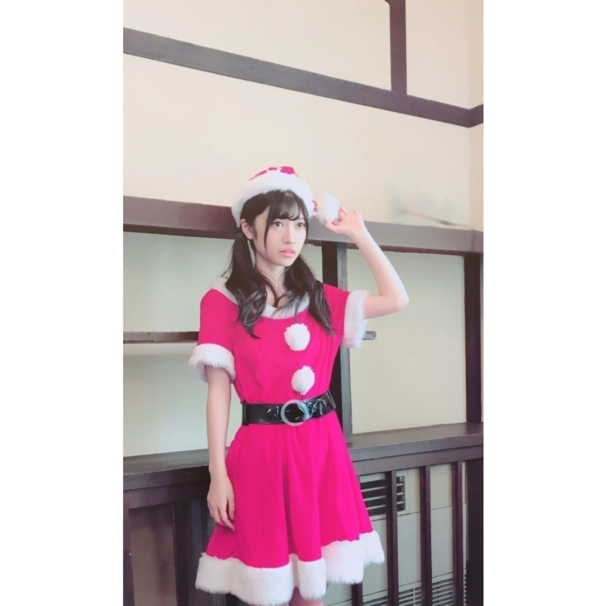
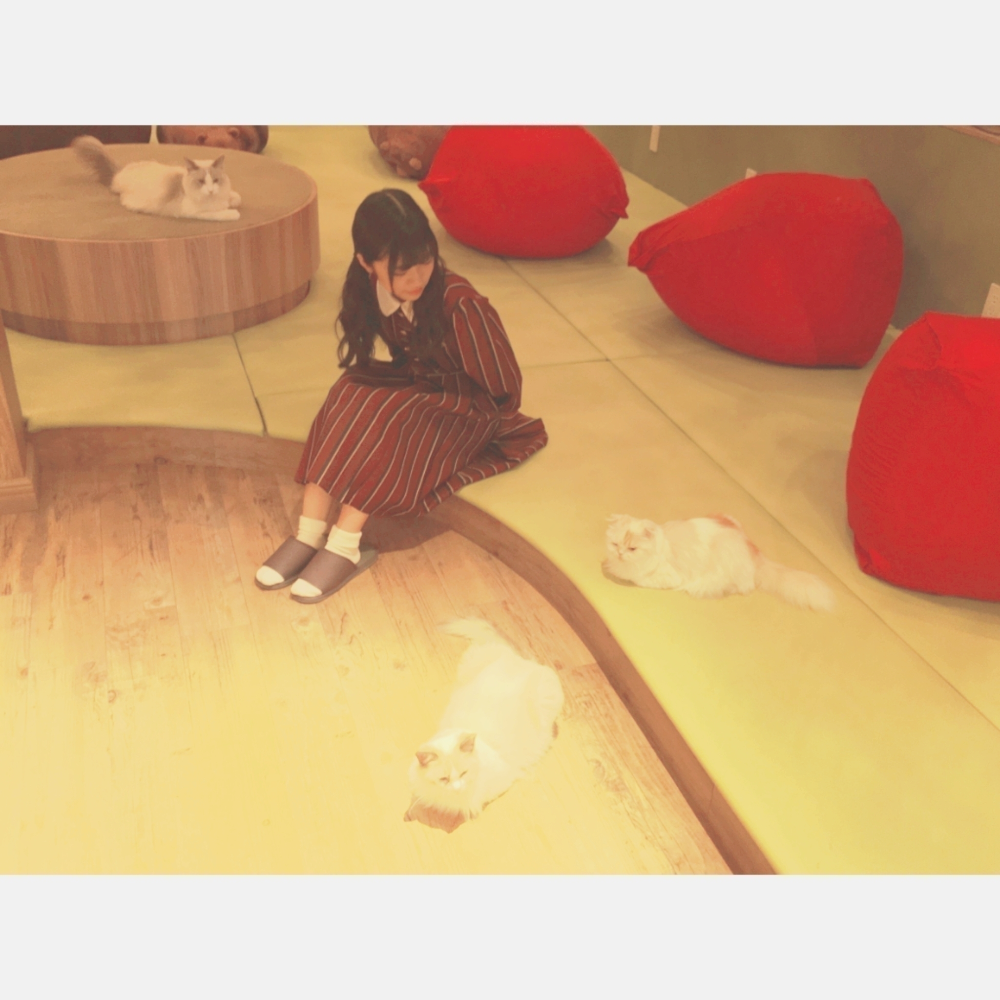
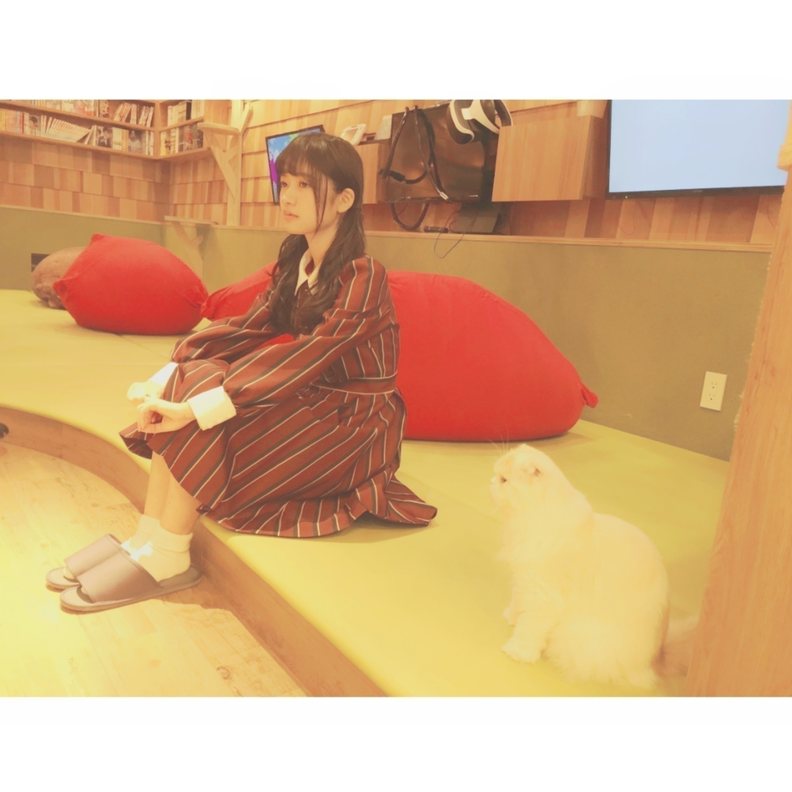
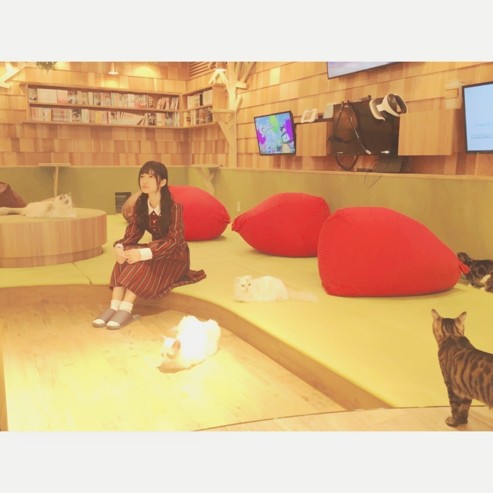

2016/1225Sunタマゴボーロの食べ方
ぷにぷに
ふわふわ
ぽんぽん
ぱ
ぺ
こういう単語って
何で可愛らしいって
思うんだろう
不思議
Merry Xmas✨
昨日もブロク書いたのですがMerry Xmasです
駆け込みブログです(..)

ヤングガンガンさんのオフショット
クリスマスも終わると
あっという間に
今年も終わってしまいます。
よく分からないけど
寂しい気持ちになります
でも、来年も今年の
私では
想像もつかない様な
素敵な未来が
待ってるといいなと、、、
その為にも日頃
変わらず自分らしさを
大切に努力して参ります。
という事で
運とかもあるけど
多少は自力で未来を変えれると思います。
楽しんだものがちなのは
事実です(..)
2017年も楽しく生きていればそれでいいっ✨
とりあえずね
身がないとね
何も始まらないからね
皆さんもね✨
久々に質問返しします
コメントにはてなマークがついてるものにランダムでしました(..)
また、気になる事あったら
コメントしてみて下さい✨
●蘭世メリクリー！
クリスマスはプレゼント貰いましたか？
→Merry Xmasー
貰えなかったよ
くれますか、、、(..)
●我が家に蘭世サンタさん来ないかな〜
→うーんうーん
行くべきなんだろうが
私の方がまだまだ甘えたい
プレゼント欲しい✨
●蘭世さん、こんにちは。クリスマスケーキ食べましたか？
→食べました
アイスも食べました素晴らしき。
クリスマスは
Jackson 5の
''I Saw Mommy Kissing Santa Claus''を聴くのが
私のルール✨



猫さんとも
同じ目線で対等に✨
2016/12/25 22:18


コメント(939)
めっちゃ感動したよー
クリスマスは、何してたの〜
2017も応援する！
更新ありがとね〜
1+1=100
もうそろ2015年終わっちゃうなー！
京都個握楽しみにしてるよ！
ちなみにクリスマスプレゼントは貰えてないよ(T . T)
いつも読んでます！
蘭世のサンタまじたまらんぜ〜〜
これから爆発的にコメントするね！
対等に見ても可愛いから
対等に見れないわ
寺田蘭世とてもよきかな
メリークリスマスだね！
蘭世のブログ更新頻度高くて良きかな！！
欅ちゃんのライブ行ってきたよ！！迫力すごかったのと曲の雰囲気に合わせた表情がすごかったかな！
何故か早く蘭世に会いたくなったよ〜( ´-` )
俺も同じ目線で対等になりたいものです、、
2017年の活躍も期待しておりますね( ´・ω・｀)ﾉ~ﾊﾞｲﾊﾞｲ
MerryX'mas
サンタさんからプレゼントはもらえたかな？
自分は今日、欅坂46の昼公演に行って来ました。
これまでテレビ以外で観たことなかったので乃木坂との違いを考えながら参戦しました。
一言で言うと、「動」のライブ、でした。
冒頭から全員で激しいダンスの曲が続き、今流行りのダンス&ボーカルユニット路線に思えました。
そこに若い人誰もが抱える悩みや疑問を散りばめた共感出来る歌詞。
これが自分の感じた欅坂の特徴です。
観客も乃木坂より若い人が多く雰囲気も少し違いました。
ライブ後は新宿へ移動して宝塚雪組さん公演の「私立探偵ケイレブ・ハント」千秋楽をライブビューイングで観てきました(^-^)。
早霧さんの格好良さ、熱さ、探偵社の皆さんの正義感、友情がグッときた〜(￣▽￣)。
そして悪との対決と知略、ヒロインとのロマンス。
宝塚の王道が網羅されてて本当に良かったっス(￣▽￣)。
今日は千秋楽なので卒業者の挨拶などカーテンコールも観れてお得だったよ(^-^)。
結局トリプルアンコール位やったと思うけど、早霧さんも少し困り気味で挨拶してたよ(笑)。
今日聞いてて面白かったのは、客席から「アモーレ！」の掛け声掛かった時に早霧さんか。「アモーレいただきました」と返した事、最後に皆で「キズナキズナ」ポーズして一体感を出してた所、でした。
という訳で充実したクリスマスを過ごせました(^-^)。
蘭世も良い日だったら何よりです。
またね！
メリークリスマス！
蘭世にもサンタさんは来なかったのは残念ですね！
来年は何かプレゼント送ろうとおもいます！！
来年、健康に安全第一で頑張りましょう！
らんぜのいきおいとまらんぜ！
控えめに言ってすち
ブログ更新嬉しいです（ ; ᴗ ; ）♡
ましゅまろ とか ぽとふ とか
可愛いですよね！！！！
（合ってますか？笑）
猫と蘭世ちゃんの組み合わせ
可愛すぎです無敵 、、！
我が家でも猫飼っているのですが
蘭世ちゃんの方が可愛いです (..)←
なんか全体的に可愛い
連日お疲れ様(^^)
あとメリークリスマスやね！笑
らんぜが来年、色んなものを手にしたいって
言ってるの見て、推しててよかったなって思ったし
来年はもっと推していきたいなって思いました
今年はあと残り少ないけど、風邪とか引かないように
がんばってね！！
ブログ更新ありがとう
今日はクリスマスだねーーー
昨日言ってた通りお仕事お疲れ様ーー
2日連続嬉しいな
蘭世の顔見てると自然に癒される〜
ヤングガンガンさんみるねーー
蘭世サンタ今日こそは来てくれるはずw
手紙書いときまーす
それでは今日はこの辺で
おやすみ蘭世
クリスマスも終わっちゃったね〜。。。
なんか去年とは違ってバイトして過ごしてたから感じなかった。。笑
蘭世サンタが何回も見れてクリスマス気分だよ( .. )
半濁点がつくと可愛くなるのかな？？
なんかふわふわした感じになるよね笑
今年もあと少しあるし、楽しんだもん勝ちだぁぁぁ！！！
楽しむぞぉぉぉ(^^)(^^)
一生蘭世推しのゆうたより
乃木坂とはまた違った魅力を感じました。
ライブはやっぱり楽しいですね。
次は乃木坂のバスラかな！
昨日に続き、メリークリスマス！
今年もおわりですね、本当にあっという間。
楽しんだもん勝ちって言われてましたが、ほんとそうですね。
今年は自分自身すごく楽しめました‼︎
蘭世ありがとーう！良いお年を！
ぽむぽむ
ぺ
ぷにぷに笑
そしてメリークリスマス♪
ユンです(*^^*)
またブログ！びっくりしました！
めっちゃ嬉しい、、、(*^^*)
そしてコメントでお返ししてくれないかなーって
書いたけど本当にお返ししてくださって
なんかすっごく嬉しかったです！
サンタさんめっちゃ似合う
そして猫と蘭世は正義ですね(^^)
早く翻訳してまたコメント書きますね！
ありがとう！
ではまた！
寺田蘭世様
蘭世！ブログありがとう〜最高のプレゼントだよー
蘭世のブログ楽しく読んでます。
何時も、蘭世の熱い思いが詰まった。ブログは嬉しい。
蘭世サンタは、推しには最高のブログのプレゼントくれましたね。
ありがとう〜
プレゼントのように嬉しいです(´∇｀)
ペッペッペー。って斎藤さんみたいで可愛いね！
あ、トレンディエンジェルね？（笑）
自分も、人生は楽しんだもん勝ち精神で毎日生きてるよ！ 今日は、クリスマスなのに友達と競馬場に行きました！ ほんと楽しかったよ(´∇｀)
来年もお互い素晴らしい1年になるように、初心や、努力、誠実心を忘れずに頑張っていこうね！
でも乃木坂46のおかげですごく楽しい1年だったな〜
猫と蘭世すっごく可愛い〜
癒される(o^^o)
私も質問するね〜(^^)
何色の猫が可愛かった〜？
最近食べたものでおすすめのものありますか？
最近ハマってる曲はなんですか？
じゃあ、またコメントするね〜(*´﹀`*)
年末の忙しい時期にブログ更新ありがとう！
蘭世に質問！
アイドルって正月休みどれくらいあるの？
あと、蘭世は何して過ごすのー？
年末年始忙しいと思うけどゆっくり休んで来年も頑張ろう！
らんぜの勢い止まらんぜ〜！
本当に二日連続だ笑
モバメで言われた通りコメントしまーす笑
僕の家にはサンタは来ませんでした…
蘭世が来てくれたらいいのにな〜笑
少し早いけど来年からは高校生っていう身分がなくなるけど、なにか挑戦してみたいことはあるの？
僕は大学生になったら古着が似合う男になりたい！
また更新お願いします！
楽しみに勉強します笑
コメントする